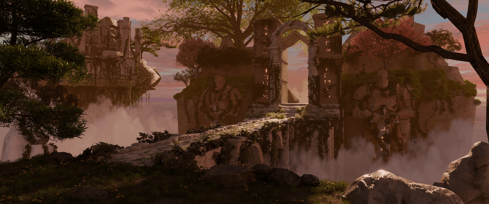
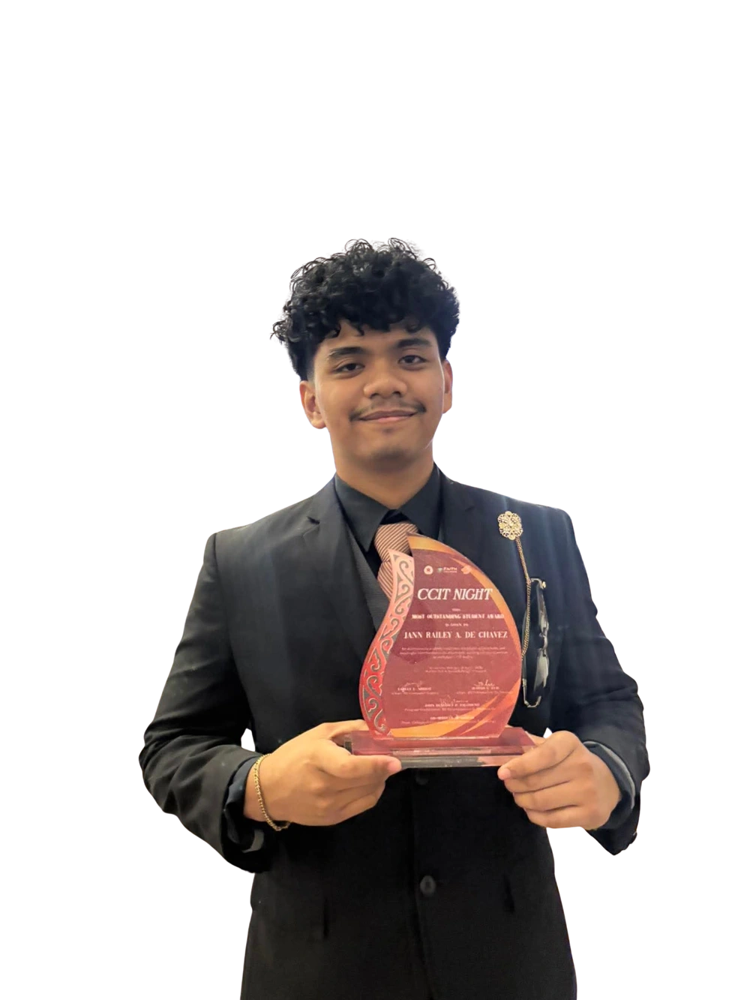

3D Art.
Animation & Visual Storytelling.
Available for commissions on VGen ↗
The Empty Frame.
Characters in motion.
An upcoming animated film by Impastory Studios & Marionette Motion. My roles include Animation Director, 3D Animator, Character Modeller, and Rigger.
Enable JavaScript to play Scenes 14, 16 and 17 continuously.
Selected shots I animated
for our upcoming film.
Scenes 14, 16 and 17 play consecutively, offering a preview of my animation work on The Empty Frame.
My roles: Animation Director · 3D Animator · Character Modeller · Rigger
Explore the animation project ↗


Animation direction, 3D animation, character modelling and rigging by LUMN. Texturing by Prinz. Echo concept design by Elaghast.
Puppet Strings.
From concept to screen.
An animated film by Marionette Motion. I contributed across the production process, including producing, editing, 3D character creation, environments, lighting and animation.
Production &
creative roles.
- Producer
- Film Editor
- Sole Rigger
- Sole Character Artist
- 3D Modeller
- Environment Artist
- Lighting Artist
- 3D Animator


Puppet Strings · Marionette Motion. Character designs by Elaghast; modelling, rigging and texturing of Rai and Analyn by LUMN.
Explore the work.
Characters, environments, sculpts and more.
Choose a discipline or explore the complete collection.
